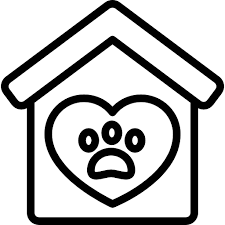

PET-ADOPTION.COM 
Home Page
Browse Available Pet
Find a dog/cat
Dog Care
Cat Care
Have a pet to give away
Contact Us
Dog Care
Feeding
Diet: Feed your dog a balanced diet with high-quality commercial dog food or a vet-approved homemade diet.
Schedule: Provide meals at regular times each day. Puppies usually need to eat more frequently than adult dogs.
Portion Control: Follow the feeding guidelines on the food packaging or consult your vet to determine the correct portion size.
Exercise
Daily Exercise: Dogs need regular exercise to stay healthy. The amount of exercise depends on the breed, age, and health of the dog.
Types of Exercise: Walks, playtime, fetch, and interactive toys are great ways to keep your dog active.
Grooming
Bathing: Bathe your dog as needed, depending on their activity level and coat type. Some dogs may need monthly baths, while others can go longer.
Brushing: Regularly brush your dog's coat to prevent matting and remove loose hair. The frequency depends on the breed.
Nail Trimming: Trim your dog's nails regularly to prevent overgrowth and discomfort.
Dental Care: Brush your dog's teeth regularly and provide dental chews to maintain oral health.
Health Care
Vet Visits: Schedule regular vet check-ups for vaccinations, parasite control, and overall health assessments.
Parasite Prevention: Use flea, tick, and worm prevention treatments as recommended by your vet.
Spaying/Neutering: Consider spaying or neutering your dog to prevent unwanted litters and reduce certain health risks.
Training and Socialization
Basic Commands: Teach your dog basic commands like sit, stay, come, and heel.
Positive Reinforcement: Use positive reinforcement techniques, such as treats and praise, to encourage good behavior.
Socialization: Expose your dog to different environments, people, and other animals to promote good social behavior.
Safety
ID Tags and Microchipping: Ensure your dog wears a collar with ID tags and consider microchipping for added security.
Secure Environment: Provide a safe and secure environment, both indoors and outdoors, to prevent accidents or escapes.
Avoid Hazards: Keep harmful substances, such as certain foods, plants, and chemicals, out of reach.
Mental Stimulation
Toys: Provide a variety of toys to keep your dog mentally stimulated.
Training Games: Engage your dog in training games and activities to challenge their mind.
Interactive Play: Spend time playing and interacting with your dog to strengthen your bond and provide mental stimulation.
Love and Attention
Affection: Give your dog plenty of love, attention, and positive reinforcement.
Companionship: Dogs are social animals and thrive on companionship. Spend quality time with your dog to keep them happy and emotionally healthy.